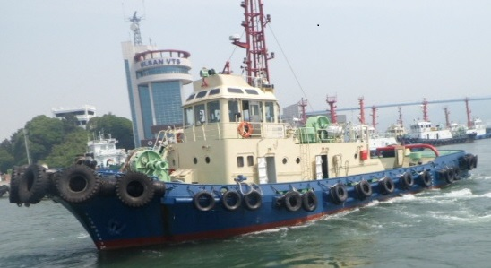

2,600 BHP 146 GRT Harbor Tug Blt 1987 Kr
/ informed by BLUE MARINE CO., LTD.
(18-306)

- BUILT : 31.10.1987 INCHON ENG. & SHIPBUILDING CORP. KOREA
- FLAG/CLASS : KOREA / KR, +KRS0C | TUG BOAT | +KRM0C
- NAVI. AREA : COASTAL
- LOA/L/B/D : 29.08 / 27.58 X 8.60 X 3.80m
- GRT : 146 ton
- MAIN ENGINE : SSANGYONG PIELSTICK 6PA5L, 1300ps X 2set (TTL. 2600ps) @900rpm
- GENERATOR : 2set X DAEDONG 125ps X 1200rpm
- PROPULSION : AQUAMASTER
- SPEED : 12.5 kt (max.)
- BOLLARD PULL : 29.5ton
- ACCOMODATION : Passenger 10P, Crew 6P (TTL. 16P)
- TANK CAPA. : FO 50.76, FW31.38 m³
- FIFI : YANMAR 4PHL-TN, 50ps X 1800rpm
- LAST/NEXT SS : 2016 APR. 12 / 2021 APR. 11
- LAST DD : MAY. 2018
- LOCATION : KOREA
Information History
- 180711 : She is available for sale.
- 180406 : She is available for sale.